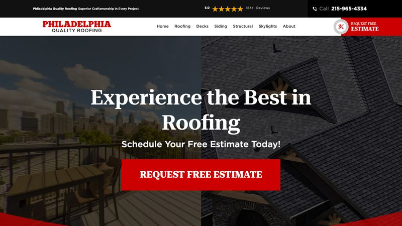
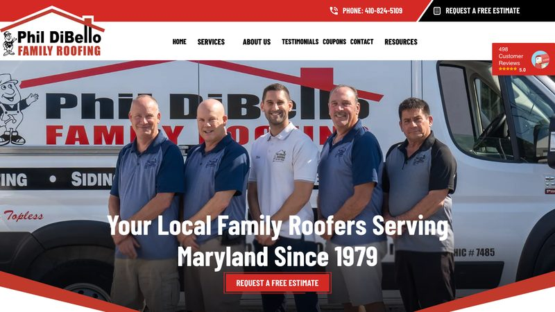

Trust signals, manufacturer badges and free-inspection forms. 3 real, live roofing websites, reviewed and critiqued. Third-party sites — not our clients.
Stay Dry Roofing
Indianapolis, IN · https://staydryroofing.com/ · loads in 0.99s

Why it is here: Advertises GAF President’s Club recognition and roof replacement “as low as $97.47/month”.
What it does well
- The hero pairs a strong local claim (“Indy’s Most Trusted & Award Winning Roofing Company Since 2016”) with a free-inspection address form.
- Manufacturer recognition (GAF President’s Club) is a real differentiator.
- Monthly financing is shown as a concrete number, which helps price-sensitive homeowners.
What could be better
- There is no online booking calendar — the address form is the only conversion path.
- The page is text-heavy and the footer is crowded with links.
Philadelphia Quality Roofing
Philadelphia, PA · https://philadelphiaqualityroofing.com/ · loads in 0.44s

Why it is here: Has a 4.7 rating with 183 reviews in its structured data and two office addresses (Philadelphia and Wildwood, NJ).
What it does well
- A free-estimate form asks for the service type, which qualifies leads before they call.
- Two office addresses with phone numbers build local trust in both markets.
- The “specialty roofing” positioning (decks, siding, framing, skylights) sets it apart from shingle-only roofers.
What could be better
- The homepage is very long (7,600+ words), which can bury the contact form.
- No prices or financing are published.
Phil DiBello Family Roofing
Baltimore, MD · https://www.phildibelloroofing.com/ · loads in 0.29s

Why it is here: Shows a 4.8 rating with 498 reviews in its structured data and lists seven Maryland counties it serves.
What it does well
- Family-owned since 1979 and A+ BBB accredited — strong trust signals.
- The service area is spelled out by county (Baltimore, Harford, Carroll, Anne Arundel, Frederick, Montgomery, Howard).
- Owens Corning, CertainTeed and GAF brand logos show the materials they install.
What could be better
- The hero has a busy promo banner and heavy text overlay, which looks a little dated.
- There is no online booking or quote form on the homepage — the phone number is the only conversion path.
Want a roofing website like these?
Our template pack includes a ready-to-edit roofing template with tap-to-call, service area, FAQ, contact form and LocalBusiness schema — plus nine other trades.
Get the 10-template pack for $49
Or start with the free guides.
← All examples by trade